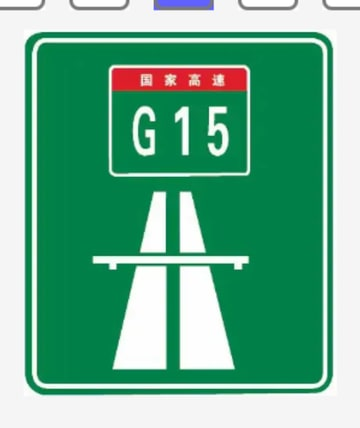

#1 · screenshot-crop✓ Selected
operation: extract-enhance-from-approved-source
Likely existing qid: q0799
What’s the meaning of this sign?
public/qbank/2023-test1/images/img_7304a3fccfa73182081cec963194238c.jpeg
visual similarity 0.8259 · similar
source: imports/ru/batch-11/screenshots/Screenshot 2026-04-19 at 18.55.16.png
possibleExistingQidMatches
q0799 · 0.8259 · similar
What’s the meaning of this sign?
public/qbank/2023-test1/images/img_7304a3fccfa73182081cec963194238c.jpeg
What’s the meaning of this sign?
public/qbank/2023-test1/images/img_7304a3fccfa73182081cec963194238c.jpeg
q0661 · 0.7971 · similar
What’s the meaning of this sign?
public/qbank/2023-test1/images/img_8a074194a6aa6d959a88fd0aa8f3e623.jpeg
What’s the meaning of this sign?
public/qbank/2023-test1/images/img_8a074194a6aa6d959a88fd0aa8f3e623.jpeg
score 0.6341
visual 0.7102
keyword 0.5613
tag 0.7559
shape 0.8283
bucket screenshot-crop
pHash 0.7500
hist 0.5518
aspect 0.8320
crop: 1651, 411, 538 × 639
reason: keyword overlap, tag overlap, shape match